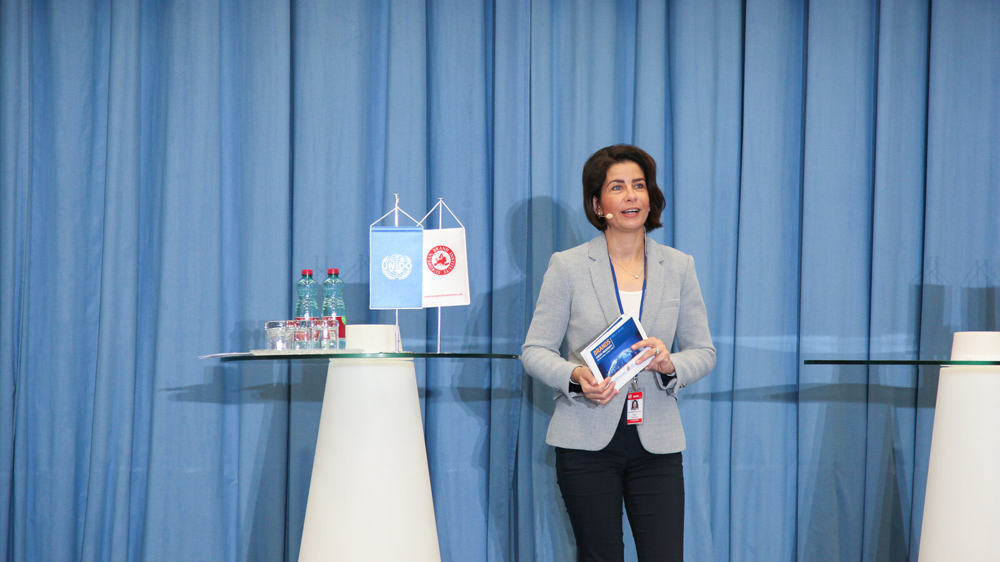
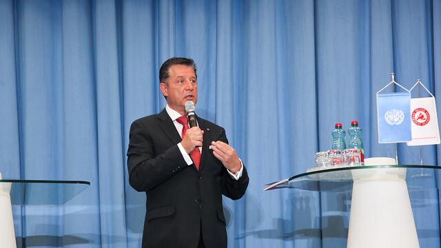
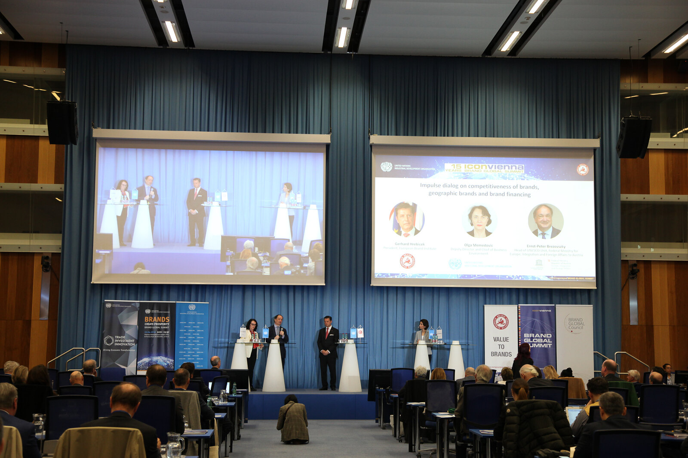
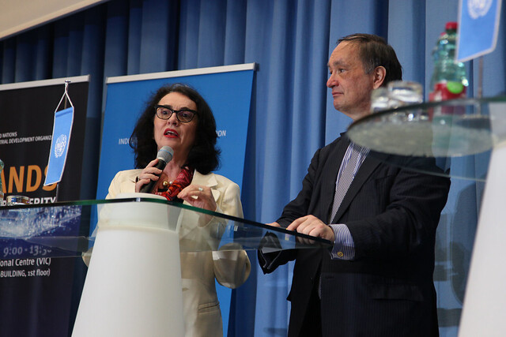
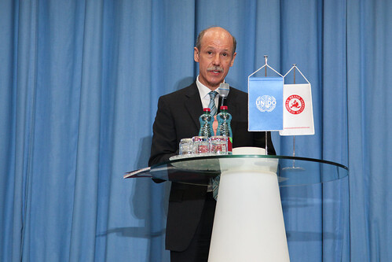
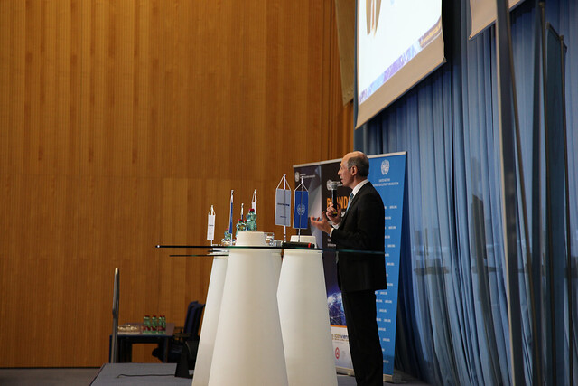
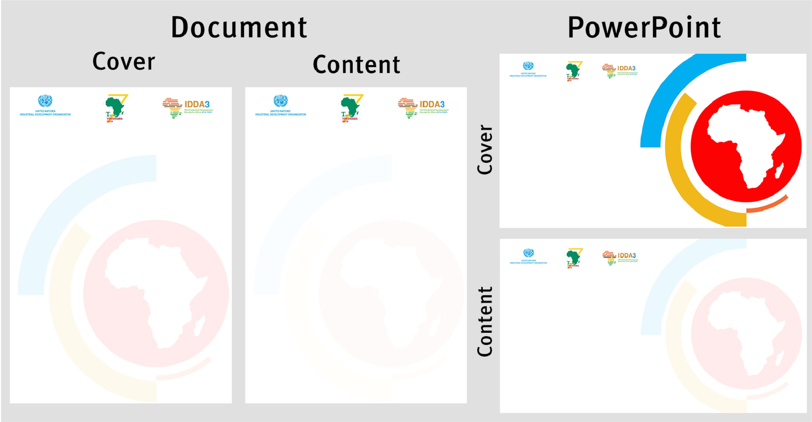
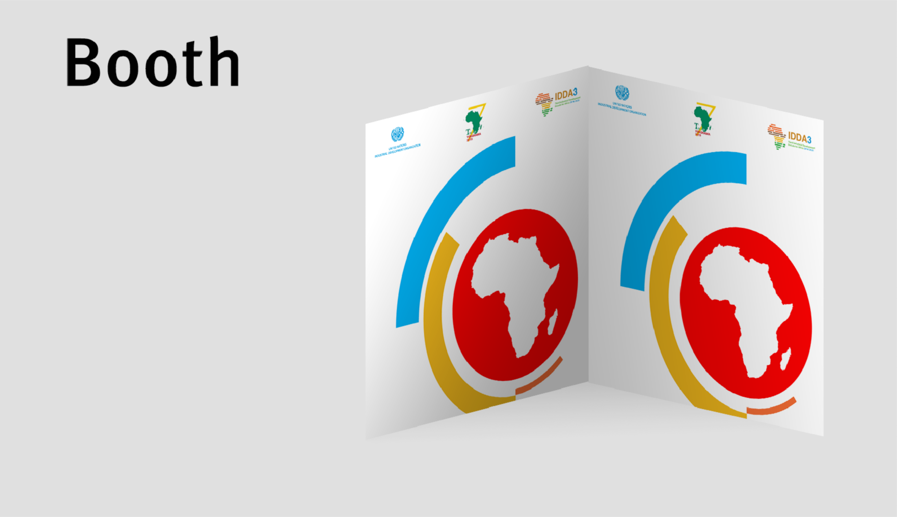
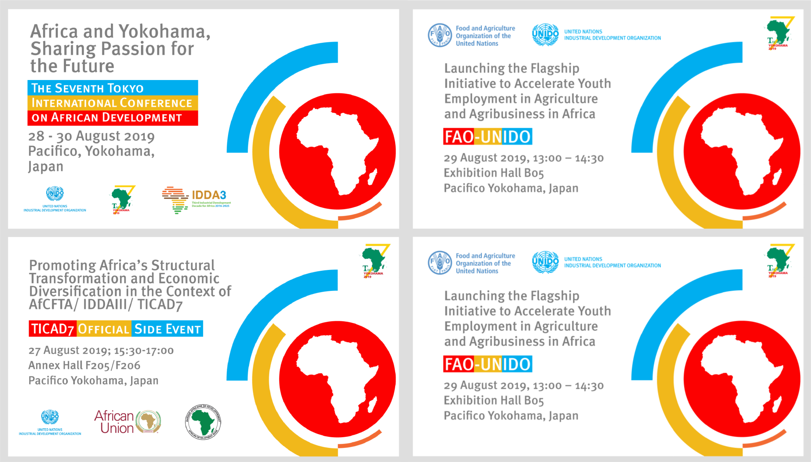

Arbeit beim UNIDO
Project Overview
5 Monate / Print und Branding / Solo und Gruppen Projekte
Verschiedene Projekten als Praktikant in der Medienabteilung bei der Organisation der Vereinten Nationen für industrielle Entwicklung (United Nations Industrial Development Organization).
15th ICONVIENNA – Brand Global Summit 2019
- Ein Event für wie Branding und ihre Geschichten zur Entwicklung von nachhaltige Produkten und Richtlinien unterstützt.
- Als Fotografin assistiert und Fotos bearbeitet.







TICAD7
- Branding für das größte Events den afrikanischen-japanische Inititiaven UNIDOs.
- Benutzt die Farben des Pre-Events als Verbindnug zum Main Event.
- Benutzt die selbe Typography des UNIDOs.




Politics, Research, Statistics Newsletter
Ein Newsletter für den Politics, Research, and Statistics Abteilung des UNIDOs.
- Die ersten zwei Ausgaben mit der anderen Praktikantinnen entworfen.
- Newsletter für politischer Entscheidungsträger um spezifische Strategien zu bauen.


UNIDO 18th General Conference
- Logo und kleine Elemente für das größte Event der UNIDO.
- Integriert der Nationalblume Emirates und arabischen Geometrie.
- Als Leiterin für die Verlagselemente zusammen mit anderen Praktikantinnen.